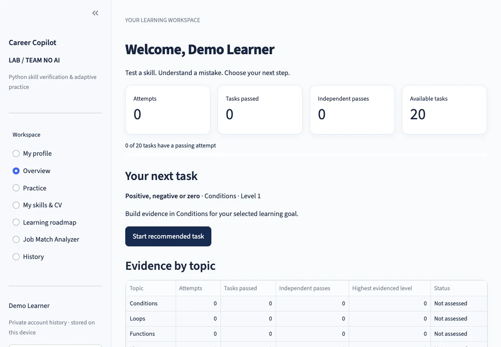

Live web app
Live web appProstuti: Admission OMR
A Bangla OMR practice app for admission candidates, with timed 100-question sessions and saved attempt history.
Cloudflare WorkersTimed practice
Live web apps, software prototypes and academic projects.
Live web appA Bangla OMR practice app for admission candidates, with timed 100-question sessions and saved attempt history.
A university admission tracker with application dates, eligibility checks and exam clash alerts.
 Live web app
Live web appPlan courses, estimate CGPA, compare retakes and track graduation requirements.
 Live web app
Live web appThe event website for the 2026 New Government Degree College reunion.
 Prototype
PrototypeDonor search by blood group and area, with a directory of demo profiles. Still in progress.

PrototypeA team learning prototype with progress tracking and originality checks. I integrated the guard that detects copied reference solutions before tests run.
A Java city-builder prototype built around reusable game objects. I helped plan the program architecture and data handling.
A Java implementation of Conway’s cellular automaton, where each cell’s neighbours decide whether it survives.
Smart EV charging network and management system for Bangladesh. A final-year concept in progress: station availability, time-slot booking and an operator workflow.
Fictional station data. No real booking is made.